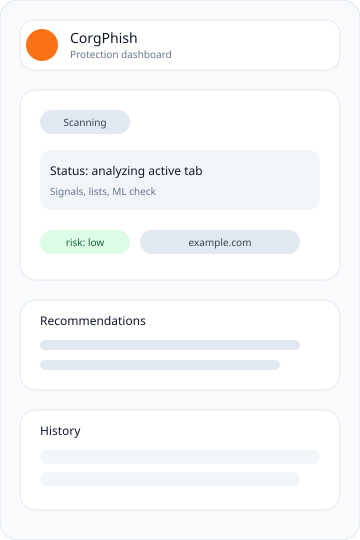
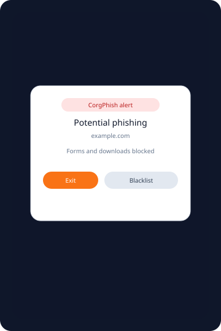

Trusted + Whitelist
Сравнение с локальным trusted.json и вашими списками. Отображается конкретный матч‑домен. Compares against trusted.json and your lists with explicit match evidence.
CorgPhish сочетает trusted‑списки, анализ форм, брендов и локальную ML‑модель. Всё работает оффлайн прямо в браузере. CorgPhish blends trusted lists, form + brand checks, and a local ML model. Everything runs offline inside your browser.


Комбинированные сигналы дают меньше ложных легитимных вердиктов. Multiple signals reduce false “safe” results.
Сравнение с локальным trusted.json и вашими списками. Отображается конкретный матч‑домен. Compares against trusted.json and your lists with explicit match evidence.
Поиск внешних action‑URL, подмены брендов и подозрительных полей. Detects external form actions, brand mismatches, and risky fields.
Левенштейн и бренд‑токены для доменов‑клонов. Levenshtein + brand tokens for clone domains.
Блокировка форм и загрузок при высоком риске. Временное разрешение — 1 клик. Blocks forms and downloads on high risk. Temporary allow in one click.
Пайплайн проверки прозрачен — вы всегда видите источник вердикта. The pipeline is transparent — you always see the verdict source.
Удаляем www, проверяем TLD и валидность домена. Strip www, validate TLD and domain structure.
Trusted/whitelist/blacklist + детектор похожих доменов. Trusted/whitelist/blacklist plus similarity checks.
Бренды, формы, внешние отправки данных. Brand hints, forms, external submissions.
Локальная модель подтверждает риск или оставляет сайт подозрительным. Local model confirms risk or keeps the site suspicious.
Политики, централизованные списки и контроль корпоративных доменов. Policies, centralized lists, and corporate domain control.
Отдельная версия расширения для организаций с белыми/чёрными списками и политикой warn/block. A separate extension build with allow/deny lists and warn/block policy controls.
Скачайте архив с релиза на GitHub. Download the release archive from GitHub.
Откройте chrome://extensions и включите режим разработчика. Open chrome://extensions and enable developer mode.
Нажмите «Load unpacked» и выберите папку CorgPhish. Click “Load unpacked” and select the CorgPhish folder.
Поставьте CorgPhish и контролируйте каждый домен сами. Install CorgPhish and control every domain yourself.
Скачать Download